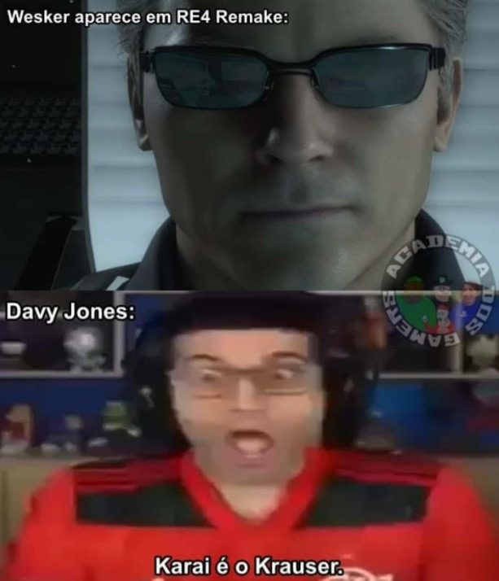
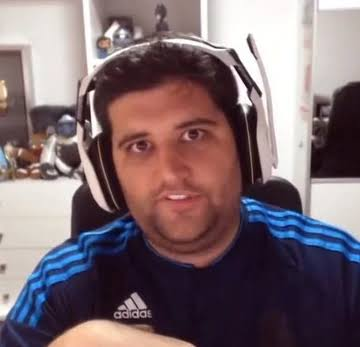

alem disso ele tambem e conhecido pela tanto de besteiras que ele fala durante suas gameplays como ele confunfir as palavras e os nomes das coisas, sua comunidade e principalmente os gamers que normalmente assistem os videos dele para saber se um jogo vale apena pela recomendacao do youtube mas acabam se deparando com um canal de comedia
biografia
Davy Jones deixou o emprego formal em 2010 para se dedicar exclusivamente aos jogos. Nesta época, utilizava o canal "Estúdio Pirata". Mais tarde, começou a produzir vídeos para o canal "Gameplayrj", inicialmente sobre o jogo Grand Theft Auto V e depois com foco em comentários de notícias da indústria de jogos eletrônicos e da cultura pop. Chegou a fazer sete vídeos diários. Em 2015, estava entre os dez maiores youtubers da categoria no Brasil. Em 26 de agosto de 2017, Davy Jones apareceu no programa Zero1, da TV Globo, apresentado por Tiago Leifert. No fim do ano, ele se mudou do Rio de Janeiro para São Paulo.Desde setembro de 2021, apresenta, ao lado de Igor "3K" Coelho o Flow Sport Club, um podcast ligado ao Flow Podcast que tem como convidados jogadores de futebol. Ele também fazia live streams na Twitch de jogos como Call of Duty: Warzone.
